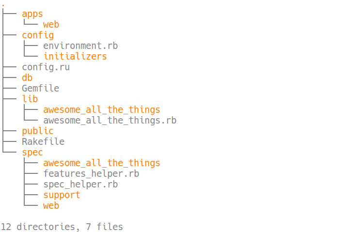
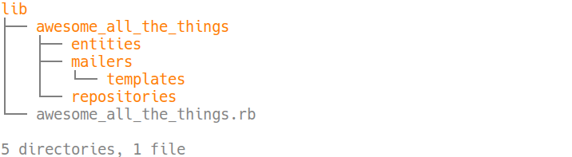

Hanami
A beleza da simplicidade
Boa Tarde!
Marcello Rocha <@mereghost>
- Programando ruby há mais de 10 anos
- Praticante de Refactor Terapêutico
- Apaixonado por RPGs, jogos de tabuleiro etc
Hanami
Mas o que é?
Um framework web moderno para Ruby
Originalmente chamado Lotus
Qual o foco dele?
- Velocidade
- Segurança
- Funcionalidade e leveza
- Simplicidade
Seu framework não é sua aplicação.
The web is just a delivery mechanism!
Vale assistir a talk: Architecture: The Lost Years
Libertar-se do trilhos
Diferenças & Dificuldades
- Estrutura do projeto
- Validações
- Mecanismo de Entrega
- Controllers
- Views
- Models
- Interactors
Estrutura do projeto
$ hanami new awesome_all_the_things 
Multiplas aplicações
Lógica de negócio
Validações
São providas por um modulo que pode ser incluido em qualquer objeto.
Os validadores usam a dry-validation por baixo
Um exemplo simples
# Rails
validates :some_field, presence: true, length: { in: 3..8 }
# Hanami
required(:some_field) { filled? & str? & size?(3..8) }
# Agora com Macros!
required(:some_field).filled(:str?, size?: (3..8))
Custom Predicates
class SomeRandomCoolThing
include Hanami::Validations
EMAIL_REGEX = /.+@.+/ #totally works!
predicate :email?, message: 'not an email' do |actual|
actual =~ EMAIL_REGEX
end
validations do
required(:nullable).maybe(:int?)
required(:something_or_the_other) { str? | int? }
required(:an_email) { email? }
optional(:an_array).each(:int?)
end
end
Validações Complexas
validations do
required(:reason).maybe(:int?)
optional(:reason_text).maybe(:str?)
required(:address).schema do
required(:zip_code) { filled? & format?(/\d{5}-\d{3}/) }
required(:country).filled(:str?)
end
rule(:others, [:reason, :reason_text]) do |reason, text|
reason.none?.then(text.filled?) & reason.filled?.then(text.none?)
end
end
Reuso
class AddressValidator
include Hanami::Validations
validations do
required(:zip_code) { format? /^\d{5}-?\d{3}$/ }
end
end
class UserValidator
include Hanami::Validations
validations do
required(:name) { filled? & str? }
required(:address).schema(AddressValidator)
end
end
O mecanismo de entrega
Controllers
Controllers
São apenas um modulo, um namespace.
module Web::Controllers::SemanticallyRelevantName
# here be dragons
end
Actions
São objetos que respondem a #call
module Web::Controllers::SemanticallyRelevantName
class Index
include Web::Action
def call(params)
# here be dragons
end
end
end
Mas qual a vantagem disso?
Testabilidade
RSpec.describe Web::Controllers::SemanticallyRelevantName::Index
let(:action) { Web::Controllers::AwesomeClassName::Index.new }
let(:params) { Hash[] }
subject(:response) { action.call(params) }
it 'just works' do
expect(response[0]).to eq(200)
end
end
Só mostra o que os outros precisam ver
module Web::Controllers::SemanticallyRelevantName
class Index
include Web::Action
expose :instance_variable #algo que a view precise ver
end
end
Validação de Parametros
module Web::Controllers::SemanticallyRelevantName
class Create
include Web::Action
params do
required(:title) { filled? & str? & size?(3..254) }
end
def call(params)
params.get('um.valor.aninhado.que.nao.existe') #=> nil
end
end
end
Reuso de código
module Web
module MyReusableBehaviour
def self.included(action)
action.class_eval do
before :behaviour
expose :some_object
end
end
private def behaviour; @some_object = "Nothing to see here"; end
end
module Web::Controllers::SemanticallyRelevantName
class Index
include Web::Action
include Web::MyReusableBehaviour
end
end
Views
Views
module Web::Views::SemanticallyRelevantName
class Index
include Web::View
def title
'Hanami & Ruby'
end
def sidebar
html.aside(id: sidebar) { div 'Content' }
end
end
end
Testabilidade
RSpec.describe Web::Views::SemanticallyRelevantName::Index
let(:exposures) { Hash[stuff: %w(cool awesome nifty)] }
let(:template) do
Hanami::View::Template.new('path/to/template.html.erb')
end
let(:view) do
Web::Views::SemanticallyRelevantName::Index.new(template, exposures)
end
let(:rendered) { view.render }
it 'autoescape all strings' do
expect(view.title).to eq('Hanami & Ruby')
end
end
Templates
Esses vão parecer familiares...
<h1><%= title %></h1>
<%= yield %>
<%= render partial: 'home/index' %>
Mas não quero usar um template!
module Web::Views::SemanticallyRelevantName
class Index
include Web::Action
def render
{ some: 'object' }.to_json
end
end
end
Mas não quero nem usar uma view!
#$@&%*! Ok, pensamos nisso
module Web::Controllers::AwesomeClassName
class Index
include Web::Action
def call(params)
self.body = 'something important '
end
end
end
A Lógica de Negócio

Models
Entidades & Repositórios
Entidades
class AwesomeThing
include Hanami::Entity
end
Neste momento são imutáveis
Cuidado!
thing1 = AwesomeThing.new(id: 3, value: 'cool')
thing2 = AwesomeThing.new(id: 3, value: 'awesome')
thing1 == thing2 #=> true (╯°□°）╯︵ ┻━┻
Repositories
São a interface entre o BD e a Entity.
class AwesomeThingRepository < Hanami::Repository
end
Mas o que dá pra fazer com eles?
- #all, #find, #create, #update, #delete, #first, #last
- #persist
- #clear
- #execute, #fetch
Os métodos de query são privados
Um exemplo bem, mas bem simples
# AR::Base
AwesomeThing.order(:created_at).limit(10)
# Hanami::Repository
AwesomeThingRepository.new.most_recent
class AwesomeThingRepository < Hanami::Repository
def most_recent(amount = 10)
order(:created_at).limit(amount).all
end
end
E bancos legados
class LegacyDatabaseRepository < Hanami::Repository
self.relation = :tbl_dumb_names
mapping do
attribute :id, from: :int_identity_id
attribute :date_of_birth, from: date_birth_date
end
end
Relacionamentos
class UserRepository < Hanami::Repository
associations do
has_many :posts
end
def find_with_posts(id)
aggregate(:posts).where(user_id: id).as(User).one
end
def posts_for(user)
assoc(:posts, user)
end
end
A estrutura padrão já isola sua aplicação do DB
O ideal é isolar sua aplicação também do mecanismo de entrega
Interactors
A regra de negócio vai aqui
class AwesomeInteractor
include Hanami::Interactor
expose :awesome_sauce
def initialize(value)
@inst_var = value
end
def valid?
fail! unless @inst_var
end
def call
@awesome_sauce = AwesomeThingRepository.most_awesome(value)
end
end
Hmmm... e?
#call retorna um Hanami::Result
- #success? para saber no que deu
- Acesso a variável exposta
- Injeção de dependência no seus testes de controller
Testing Nirvana
Perguntas
Obrigado!
Se tiver dúvidas, perguntas, vontade de trabalhar conosco ou só quiser trocar uma ideia: marcello.rocha@vagas.com.br | @mereghost
Participem no gitter do projeto Hanami: https://gitter.im/hanami/chat